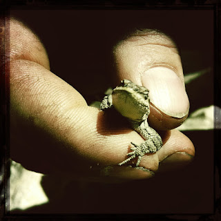
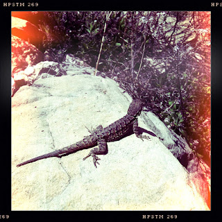
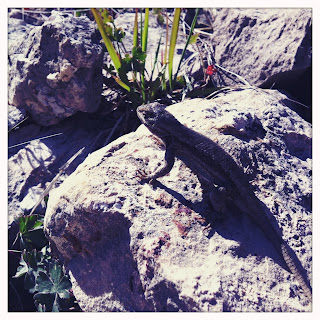

Recovered weblog entry
Blue Ridge Reservoir



Shortly after arriving at camp, we took a short drive up the road to the Blue Ridge reservoir, hidden off the 87 highway after a very bumpy drive down FR 751. The dam itself is impressive enough; but the area it created is more so. A hike down revealed a rocky area populated by numerous reptiles. We steered clear of the obvious rattlesnake dorms and caught glimpses of quite a few lizards.